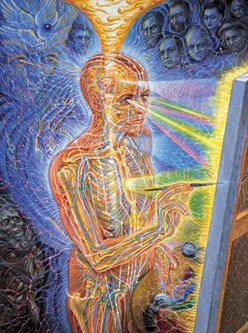

Featured Books :
Transfigurations
"It is the light that is sublime in Grey's oeuvre - which is the most important innovation in religious light since the Baroque - and that makes the mundane beings in them seem sublime, in every realistic detail of their exquisite being."
- Donald Kuspit,
Professor of Art History
and Philosophy at SUNY
-Stony Brook
Sacred Mirrors
"Reverence and beauty radiate from every page."
-- Gnosis magazine
This lavishly illustrated volume contains texts by noted philosopher Ken Wilber as well art critic Carlo McCormick, and Alex Grey.

{kind=link}
The Mission of Art
"Alex Grey might be the most significant artist alive. In a world gone postmodern, bereft of meaning and value, cut loose on a sea of irony and indifference, Alex is taking a stunning stand: there is a God, there is Spirit, there is a transcendental Ground and Goal of human development and unfolding. Higher realities are available to us, is the message of Alex Grey's art and words in this book. He has set himself the extraordinary task of depicting, in art, these higher truths and here encourages all artists to find their own unique means of serving art's abiding mission."
- Ken Wilber, Foreword to The Mission of Art